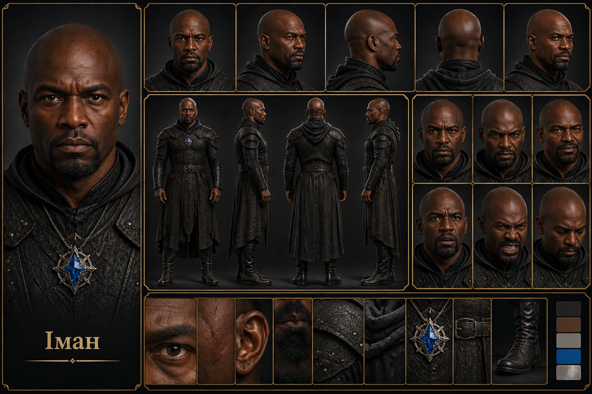

PROFILE
One of Sukhum's horunzhyi otamans
Iman is one of Hetman Sukhum's horunzhyi otamans and belongs to the Black race of kharakternyky. In military matters, he thinks systematically, studies the information he receives and considers not only the size of a force but also whether its people are prepared to operate under new conditions.
Position: Horunzhyi otaman serving Sukhum
Specialisation: Military planning, tactical command and personnel training
Affiliation: Black race of kharakternyky
Status: Active horunzhyi otaman
COMBAT OPERATIONS
Hunting enemy kharakternyky
During the fighting on the First Plan, Iman operates away from the main battle line with his own group. They sweep streets where portals frequently open. Their priority is not ordinary enemy units, but those who enable transitions between plans.
Iman coordinates his fighters and personally engages a kharakternyk who has just emerged through a portal. He breaks the opponent's concentration and disrupts the transition. The group captures the kharakternyk alive and continues monitoring new portal openings.
STRATEGIC RESPONSIBILITIES
Building joint military forces
After the hetmans agree on a joint plan, Sukhum assigns Iman three major areas of responsibility. The first is forming a military force for the Second Plan, including armoured units, aviation, logistics and technical support, so that the allies can receive assistance quickly if an attack begins.
The second is creating small, well-trained mobile units for the First Plan. They must be able to work alongside kharakternyky or operate independently. The third is training the First Plan's soldiers and kharakternyky, from basic skills to operating new equipment.
Iman understands that the hardest part is not teaching people to use new weapons, but changing their approach to warfare and preparing them for entirely different conditions.
CHARACTER AND APPROACH
Careful analysis and practicality
In his conversation with Sukhum, Iman does not rush to conclusions. He studies the material carefully, clarifies the scale of the tasks and asks practical questions about resources and personnel. He evaluates plans in terms of whether they can actually be carried out, not merely whether they look compelling on paper.